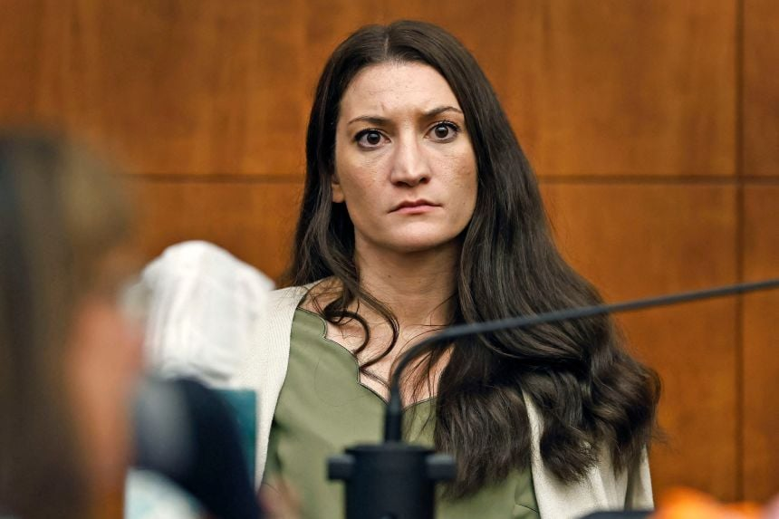

산후우울증 탓에 남편이 집을 비운 사이에 친자식 셋을 살해한 린지 클랜시
형사재판 배심원 평결에서 무죄 11 유죄 1 로 심리무효가 나와서 최근 미국이 뒤집어지고 개싸움이 났음
진영에 상관없이 유죄에 투표한 한 명의 배심원에게 엄청난 관심이 쏠렸고
사건을 맡았던 변호사는 해당 배심원에 대해 7주의 시간을 훔쳐갔다고 비난했고
무죄측 배심원들도 미디어에 나와서 유죄 배심원이 오만하고 태도가 나빴다는 등으로 지속적으로 비난함
그리고 11일자 CBS모닝에서 배심원 중 한 명이던 폴라 데블린의 인터뷰에서도 배심원에 대한 얘기가 나왔는데...
배심원 12명중 11명이 백인이고 유색인종은 단 한 명뿐이었고
그 한 명이 흑인이었는데 유죄에 투표한 배심원이었다는 거였음...
그걸 듣고 좀 당황한듯한 프로그램 진행자 게일 킹
유죄에 투표한 사람이 흑인인걸로 밝혀지니까 그림이 이상해짐...
흑인 남성 한 명에게 다굴치는 백인 배심원들과 백인 변호사....
매사추세츠주는 1967년 판례(Commonwealth v. McHoul)에서 확립된 일명 '맥홀 기준(McHoul Standard)'으로 피고인의 정신이상 여부를 평가하는데, 이에 따르면 해당 두 가지 중 하나라도 충족하지 못했다면 피고인에게 형사책임을 물을 수 없다.
자신의 행동이 범죄이거나 잘못된 일임을 인식할 수 있는 실질적인 능력(인지적 요소)
자신의 행동을 법의 요구에 맞추어 통제할 수 있는 실질적인 능력(의지적 요소)
양극성 장애가 심해서 인지능력이 없어지면 무죄가 될 수 있는거 대신 정신병원에 넣지